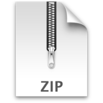

ditto

Drop Dojo project .zip(s) here.
Each project will be analyzed and all Dojo dependencies will be listed. This makes it easy to manage your build profiles.
Uh Oh.
Ditto requires a standards-compliant
browser that supports
HTML5 File Access
.